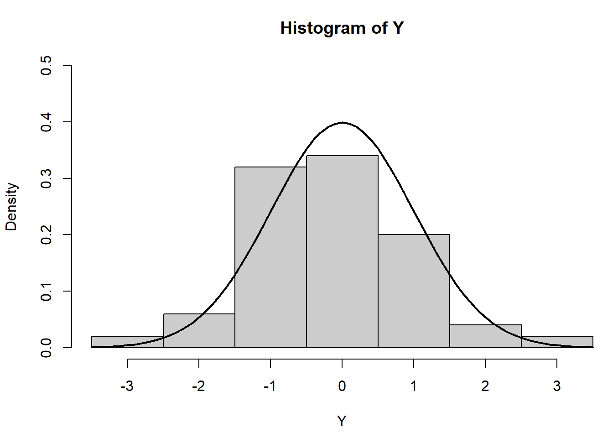
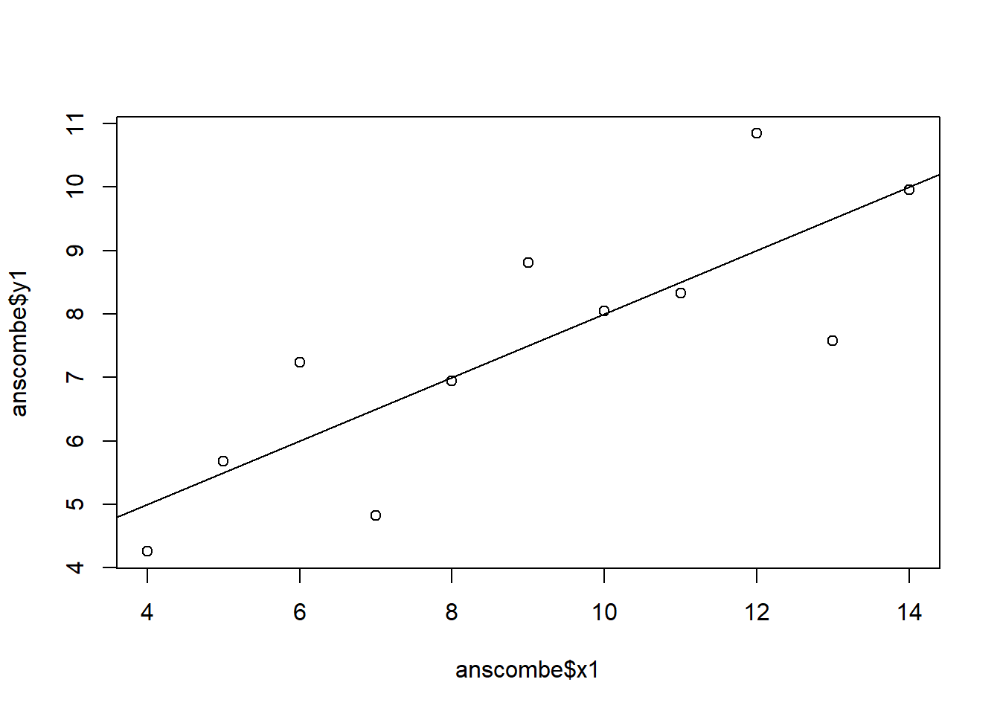

# 1 (a) Choose one of the six charts and explain how it is configured by adding documentation to the codes## HistogramY <-rnorm(50) # Generates 50 random values from a normal distribution (mean = 0, sd = 1)Y[Y <-3.5| Y >3.5] <-NA# Selection/set range - makes sure no Y exceeds [-3.5, 3.5]x <-seq(-3.5, 3.5, .1) # Creates a sequence of x values from -3.5 to 3.5 with step size of 0.1dn <-dnorm(x) # Calculates the density of the normal distribution at each value of x. dnorm(x) gives the corresponding y-values for the normal distribution curvepar(mar=c(4.5, 4.1, 3.1, 0)) # 'mar' sets the margin sizes around the plot. mar = c(bottom, left, top, right) dimensions in lines of text. par() resets the default margins for future plots. Therefore, par() is the function used to set various graphical parameters for plots, while mar is a specific parameter within par() that adjusts the size of the margins around the plot. mar allows you to control the space around the plot.hist(Y, breaks=seq(-3.5, 3.5), ylim=c(0, 0.5),col="gray80", freq=FALSE) # Create the histogram. breaks sets the bins for the histogram at intervals of 0.1 between -3.5 and 3.5. ylim sets the limits of the y-axis from 0 to 0.5. col sets the color of the histogram bars to light gray. 'freq=FALSE' means the histogram will display probabilities (density) instead of frequencies.lines(x, dnorm(x), lwd=2) # 'lines(x, dnorm(x))' plots the normal curve using the x sequence and its corresponding density values. 'lwd=2' sets the line width of the curve to 2 (making it thicker). dnorm adds the normal distribution curve

par(mar=c(5.1, 4.1, 4.1, 2.1)) # Reset to default margin settings
# (2) Compare the regression models## Create four model objects### Model 1lm1 <-lm(y1 ~ x1, data=anscombe)summary(lm1)
Call:
lm(formula = y1 ~ x1, data = anscombe)
Residuals:
Min 1Q Median 3Q Max
-1.92127 -0.45577 -0.04136 0.70941 1.83882
Coefficients:
Estimate Std. Error t value Pr(>|t|)
(Intercept) 3.0001 1.1247 2.667 0.02573 *
x1 0.5001 0.1179 4.241 0.00217 **
---
Signif. codes: 0 '***' 0.001 '**' 0.01 '*' 0.05 '.' 0.1 ' ' 1
Residual standard error: 1.237 on 9 degrees of freedom
Multiple R-squared: 0.6665, Adjusted R-squared: 0.6295
F-statistic: 17.99 on 1 and 9 DF, p-value: 0.00217
## Model 2lm2 <-lm(y2 ~ x2, data=anscombe)summary(lm2)
Call:
lm(formula = y2 ~ x2, data = anscombe)
Residuals:
Min 1Q Median 3Q Max
-1.9009 -0.7609 0.1291 0.9491 1.2691
Coefficients:
Estimate Std. Error t value Pr(>|t|)
(Intercept) 3.001 1.125 2.667 0.02576 *
x2 0.500 0.118 4.239 0.00218 **
---
Signif. codes: 0 '***' 0.001 '**' 0.01 '*' 0.05 '.' 0.1 ' ' 1
Residual standard error: 1.237 on 9 degrees of freedom
Multiple R-squared: 0.6662, Adjusted R-squared: 0.6292
F-statistic: 17.97 on 1 and 9 DF, p-value: 0.002179
## Model 3lm3 <-lm(y3 ~ x3, data=anscombe)summary(lm3)
Call:
lm(formula = y3 ~ x3, data = anscombe)
Residuals:
Min 1Q Median 3Q Max
-1.1586 -0.6146 -0.2303 0.1540 3.2411
Coefficients:
Estimate Std. Error t value Pr(>|t|)
(Intercept) 3.0025 1.1245 2.670 0.02562 *
x3 0.4997 0.1179 4.239 0.00218 **
---
Signif. codes: 0 '***' 0.001 '**' 0.01 '*' 0.05 '.' 0.1 ' ' 1
Residual standard error: 1.236 on 9 degrees of freedom
Multiple R-squared: 0.6663, Adjusted R-squared: 0.6292
F-statistic: 17.97 on 1 and 9 DF, p-value: 0.002176
## Model 4lm4 <-lm(y4 ~ x4, data=anscombe)summary(lm4)
Call:
lm(formula = y4 ~ x4, data = anscombe)
Residuals:
Min 1Q Median 3Q Max
-1.751 -0.831 0.000 0.809 1.839
Coefficients:
Estimate Std. Error t value Pr(>|t|)
(Intercept) 3.0017 1.1239 2.671 0.02559 *
x4 0.4999 0.1178 4.243 0.00216 **
---
Signif. codes: 0 '***' 0.001 '**' 0.01 '*' 0.05 '.' 0.1 ' ' 1
Residual standard error: 1.236 on 9 degrees of freedom
Multiple R-squared: 0.6667, Adjusted R-squared: 0.6297
F-statistic: 18 on 1 and 9 DF, p-value: 0.002165
2 (a) Comparison of the Regression Models
The four regression models are extremely similar. All four models have almost identical coefficients for both the intercept and slope. For all four models, the intercept is approximately 3 (ranging from 3.0001 to 3.0025). The slope for all four models is approximately 0.5, meaning that for each unit increase in x, y is expected to increase by 0.5 units in each dataset. The p-values for the intercept and slope are very low (p<0.05), indicating that both the intercept and the slope are statistically significant in each case. All models have an R-squared of around 0.666, meaning that about 66.6% of the variation in y is explained by x in each dataset.
# 2 (b) Compare different ways to create the plots ## Basic versionplot(anscombe$x1,anscombe$y1)abline(coefficients(lm1))

# Change Point Colors and Size:plot(anscombe$x1, anscombe$y1, col ="blue", pch =19, cex =1.5)abline(coefficients(lm1), col ="red", lwd =2)
# Different Line Types and Colors:plot(anscombe$x1, anscombe$y1, col ="darkgreen", pch =16)abline(coefficients(lm1), col ="purple", lty =2, lwd =3)
# 3. Finetune the charts without using other packagespar(family ="serif") # Uses a serif fontplot(anscombe$x1, anscombe$y1, pch =8, col ="orange", cex =1.5) # Uses own plotting character and non-default colors. pch = 8 specifically corresponds to a star-shaped symbol. col = "orange" sets the color of the character points to orangeabline(coefficients(lm1), col ="darkred", lty =3)
# 4. Creating the plot with ggplot2 (using tidyverse package)# Load the necessary librarieslibrary(tidyverse)
Warning: package 'tidyverse' was built under R version 4.3.3
Warning: package 'ggplot2' was built under R version 4.3.3
Warning: package 'tidyr' was built under R version 4.3.2
Warning: package 'readr' was built under R version 4.3.2
Warning: package 'purrr' was built under R version 4.3.2
Warning: package 'dplyr' was built under R version 4.3.2
Warning: package 'stringr' was built under R version 4.3.3
Warning: package 'forcats' was built under R version 4.3.2
Warning: package 'lubridate' was built under R version 4.3.2
── Attaching core tidyverse packages ──────────────────────── tidyverse 2.0.0 ──
✔ dplyr 1.1.4 ✔ readr 2.1.4
✔ forcats 1.0.0 ✔ stringr 1.5.1
✔ ggplot2 3.5.1 ✔ tibble 3.2.1
✔ lubridate 1.9.3 ✔ tidyr 1.3.1
✔ purrr 1.0.2
── Conflicts ────────────────────────────────────────── tidyverse_conflicts() ──
✖ dplyr::filter() masks stats::filter()
✖ dplyr::lag() masks stats::lag()
ℹ Use the conflicted package (<http://conflicted.r-lib.org/>) to force all conflicts to become errors
# Create the plot using ggplot2ggplot(anscombe, aes(x = x1, y = y1)) +geom_point(shape =8, color ="orange", size =3) +# Star shape points (pch = 8 equivalent in ggplot2)geom_smooth(method ="lm", se =FALSE, color ="darkred", linetype ="dashed") +# Adds regression linetheme_minimal(base_family ="serif") +# Use serif fontggtitle("Anscombe's Data: Star Shaped Points with Regression Line") +labs(x ="x1", y ="y1")
`geom_smooth()` using formula = 'y ~ x'
## Download COVID data from OWID GitHubowidall =read.csv("https://github.com/owid/covid-19-data/blob/master/public/data/owid-covid-data.csv?raw=true")# Deselect cases/rows with OWIDowidall = owidall[!grepl("^OWID", owidall$iso_code), ] # Subset by continent: Europeowideu =subset(owidall, continent=="Europe")
library(ggplot2)# Convert the 'date' column to Date formatowideu$date <-as.Date(owideu$date, format ="%Y-%m-%d")plot <-ggplot(owideu, aes(x = date, y = new_deaths)) +geom_point(color ="#C71585") +# Set point color to dark pink using hex codegeom_text(aes(label =ifelse(location %in%c("Spain", "Germany", "Ukraine", "Italy"), location, "")), vjust =-1, size =2.5, check_overlap =TRUE, color ="black"# Set label color to dark pink using hex code ) +# Add labels conditionally for specific locationsscale_y_continuous(limits =c(0, 6000), # Set y-axis limits from 0 to 6000breaks =seq(0, 6000, by =1000) # Ticks every 1000 units ) +scale_x_date(date_labels ="%Y-%m", # Display the dates in yyyy-mm formatdate_breaks ="1 month", # Breaks every monthlimits =as.Date(c("2020-08-01", "2023-08-01")) # Restrict the range from January 2020 to August 2023 ) +labs(x ="Date", y ="COVID Deaths in Europe (Daily)",title ="Scatter Plot of COVID Deaths in Europe (Daily) with Selected Location Labels" ) +coord_cartesian(clip ="on") +# Ensure that everything stays within the plottheme_minimal() +theme(axis.text.x =element_text(angle =45, hjust =1), # Rotate x-axis labels for readabilitypanel.border =element_rect(color ="black", fill =NA, size =1), # Add a black box around the plotplot.background =element_rect(color ="black", fill =NA, size =1), # Add a black border around the entire plotpanel.grid.major =element_blank(), # Remove major gridlinespanel.grid.minor =element_blank() # Remove minor gridlines )
Warning: The `size` argument of `element_rect()` is deprecated as of ggplot2 3.4.0.
ℹ Please use the `linewidth` argument instead.
# Display the plotprint(plot)
Warning: Removed 29420 rows containing missing values or values outside the scale range
(`geom_point()`).
Warning: Removed 29420 rows containing missing values or values outside the scale range
(`geom_text()`).